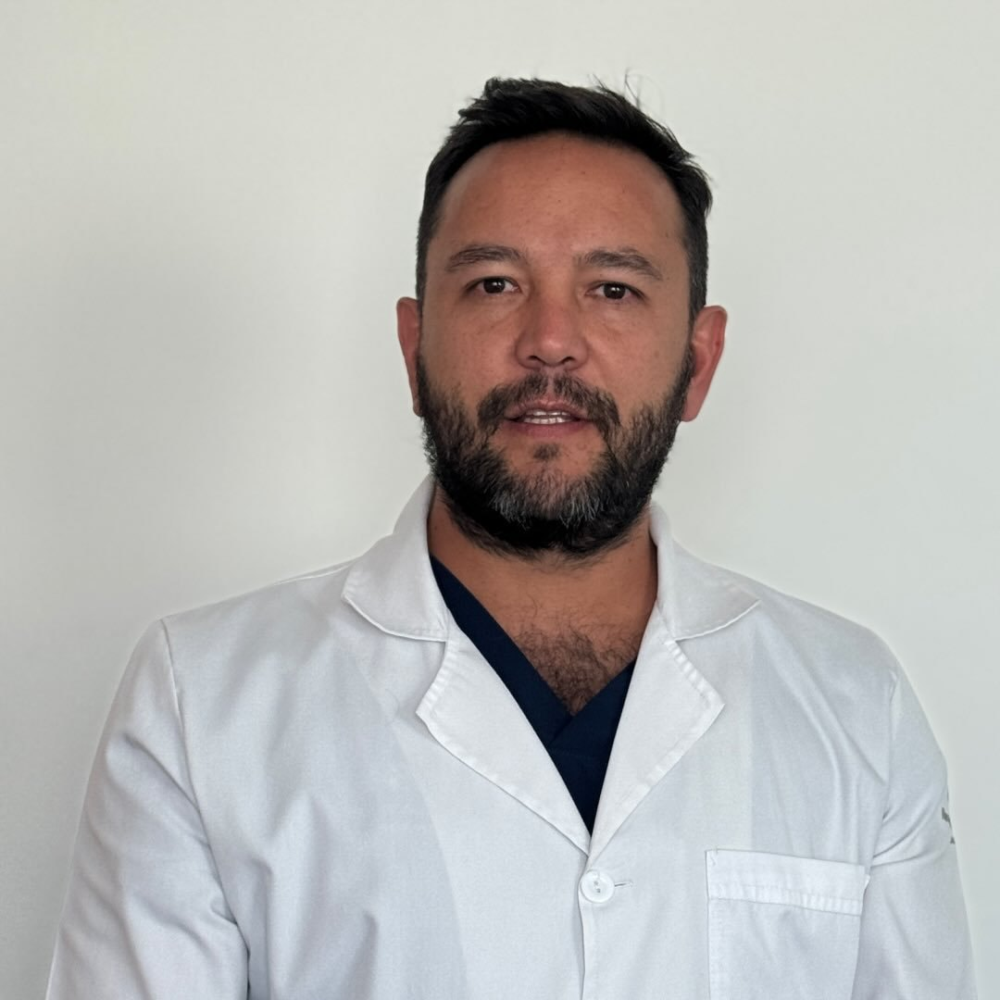
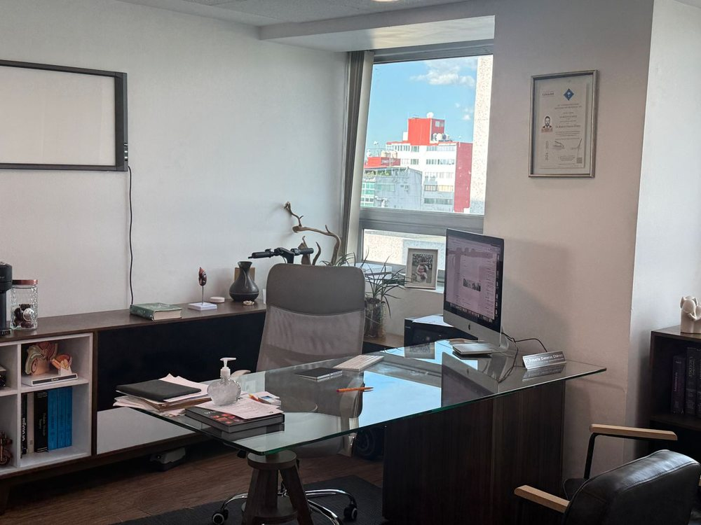
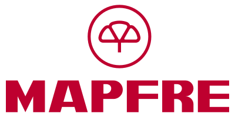
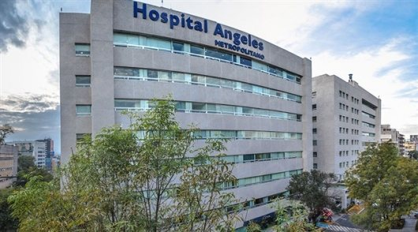
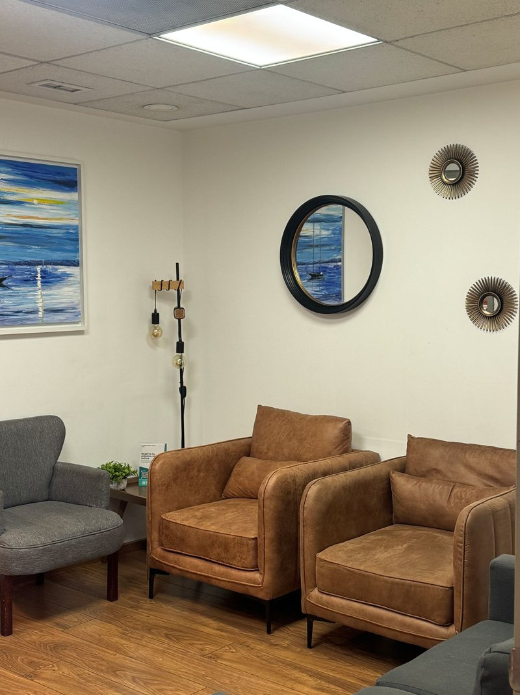
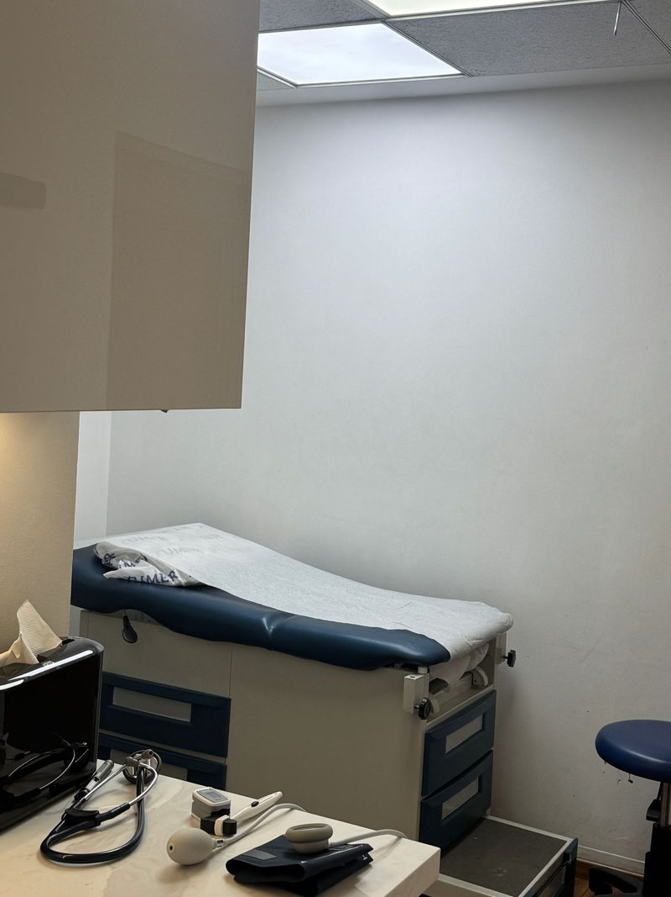
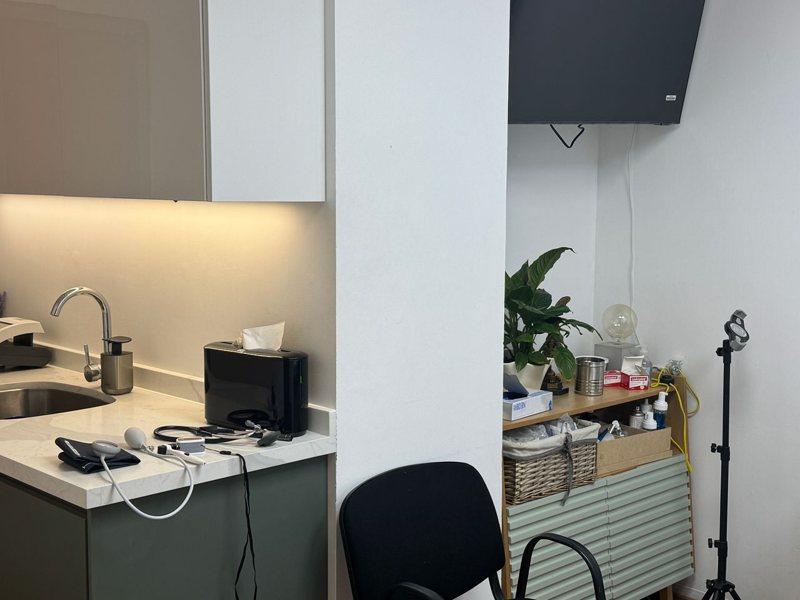

«Excelente doctor, con gran conocimiento y trato. La atención y profesionalismo son impecables.»
Urólogo en Roma Sur, Pedregal y Del Valle
Tu salud urológica, sin pena y con un especialista
Dr. Roberto Cisneros Chávez. Piedras en el riñón, próstata y cirugía de mínima invasión, explicado sin tecnicismos.

5.0 415 opiniones verificadas
+12 añoscomo urólogo
3 hospitalesen la Ciudad de México
16 aseguradorasGNP, AXA, MetLife y más
Lo que atiende, de la consulta a la cirugía
Cirugía de mínima invasión cuando se necesita: menos dolor y menos días en el hospital.
Riñón y vías urinarias
Piedras en el riñón
Dolor fuerte en la espalda baja o sangre en la orina. Tratamiento por endourología, sin cortes grandes.
Infecciones urinarias
Ardor o ganas de orinar a cada rato. Diagnóstico y tratamiento a tiempo.
Uroflujometría con EMG $600 MXN
Estudio en consultorio que mide cómo orinas para elegir el tratamiento correcto.
Próstata
Crecimiento de próstata
Te levantas de noche a orinar o el chorro es débil. Prostatectomía transuretral cuando hace falta.
Cáncer de próstata
Revisión, diagnóstico y prostatectomía radical laparoscópica.
Salud masculina y cirugía
Vasectomía
Procedimiento rápido, explicado con calma y sin pena.
Molestias en los testículos
Inflamación, ardor o una bolita. Balanitis y espermatocele.
Cáncer de riñón, vejiga y testículo
Nefrectomía y cirugía oncológica por laparoscopia.

Entiendes qué tienes, qué opciones hay y cuánto cuesta
«Especialista en problemas de vía urinaria, permítame ser parte de su historia.»
Dr. Roberto Cisneros Chávez
- Formación
- Médico cirujano, Universidad La Salle
- Especialidad
- Urología, UAEMéx
- Enfoque
- Endourología y laparoscopia urológica
- Atiende
- Niños y adultos
- Cédulas profesionales
- 5729716 y 8693016
Así es tu primera consulta
- Escribes por WhatsApp
Te damos el primer espacio en el consultorio que te quede más cerca.
- Consulta con el doctor
Te escucha, te revisa y te explica tu diagnóstico en palabras simples.
- Sales con un plan
Tratamiento, estudios o cirugía, con costos claros desde el inicio.
Precios
Primera consultadesde $1,400 MXN
Consulta de seguimiento$1,200 MXN
Uroflujometría con EMG$600 MXN
Acepta tu seguro de gastos médicos




Y 11 aseguradoras más. La cobertura cambia según el consultorio. Pagos con tarjeta, efectivo o transferencia.
Lo que dicen sus pacientes
5.0
415 opiniones verificadas. Lo que más mencionan: explicaciones detalladas, dedicación y puntualidad.
«Excelente trato y solucionó de forma inmediata el problema de salud que tenía.»
«Todo muy bien, gracias. Mi hijo se sintió en confianza.»
«Trato muy amable, explicación clara. Muy atento a toda mi explicación del porqué lo visitaba.»
«De los mejores doctores que me han atendido. Me atendió súper rápido.»
«El doctor fue muy amable, claro y con un seguimiento puntual.»
Un consultorio cómodo y discreto




Consulta en 3 hospitales de la CDMX
Preguntas frecuentes
¿Cuánto cuesta la consulta?
La primera consulta de urología es desde $1,400 MXN y la de seguimiento, $1,200 MXN. La uroflujometría con EMG cuesta $600 MXN.
¿Aceptan mi seguro de gastos médicos?
Sí: GNP, AXA, MAPFRE, MetLife, Zurich y 11 aseguradoras más. La cobertura depende del consultorio y del servicio; mándanos tu póliza por WhatsApp y te confirmamos.
¿Cómo puedo pagar?
Tarjeta de crédito o débito y efectivo. En Pedregal también por transferencia.
¿Atiende a niños?
Sí, atiende a niños y adultos en algunos de sus consultorios. Pregúntanos cuál te conviene.
¿Me pueden operar de piedras en el riñón sin cortes grandes?
En muchos casos sí, por endourología o laparoscopia. El doctor lo decide contigo en la consulta, con tus estudios.
¿Cómo agendo?
Por WhatsApp o llamada al 55 2580 7262, o en línea en su perfil de Doctoralia a cualquier hora.
No lo dejes para después
Entre más pronto se revisa, más sencillo es el tratamiento. Escribe y te damos el primer espacio disponible.